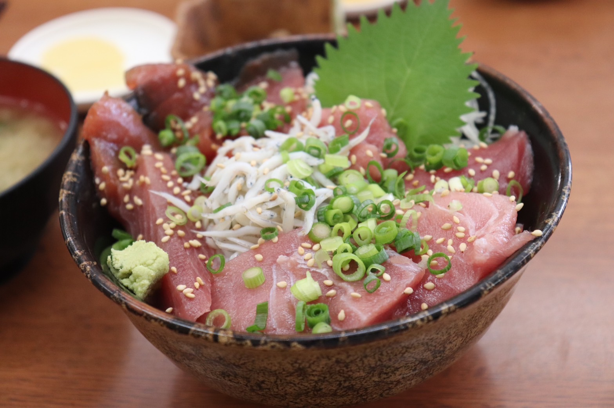

こんにちは！みつをと申します。
こちらのページでは、ウェブサイトを作成する上で必要となるさまざまな機能をテストしています。
例えば、みなさんが読んでいるこの文章を表示するのはもちろんのこと...

▲ 城ヶ島で食べたまぐろ丼。とても美味でした。
こんな風に美味しそうな食べ物の画像を表示したりもできます。
それだけではありません！
【世界三大瀑布】
- イグアスの滝
- ヴィクトリアの滝
- ナイアガラの滝
【おもしろいダジャレ】
- アルミ缶の上にあるみかん
- 隠し事を書く仕事
- コンドルがめり込んどる
このような感じでよくわからない内容を箇条書きでまとめることも可能ですし...